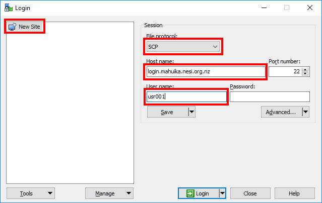
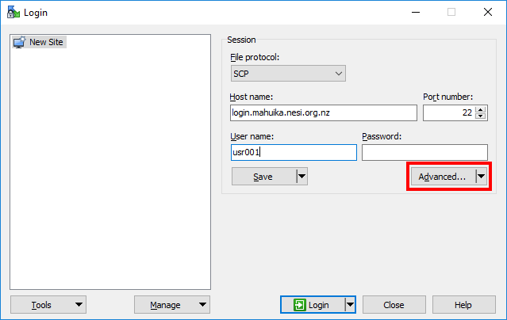
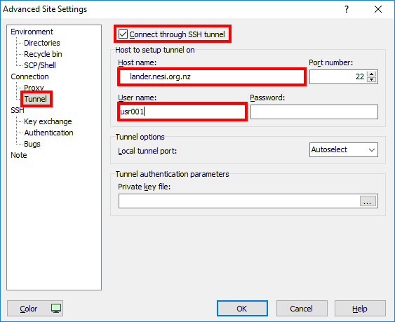
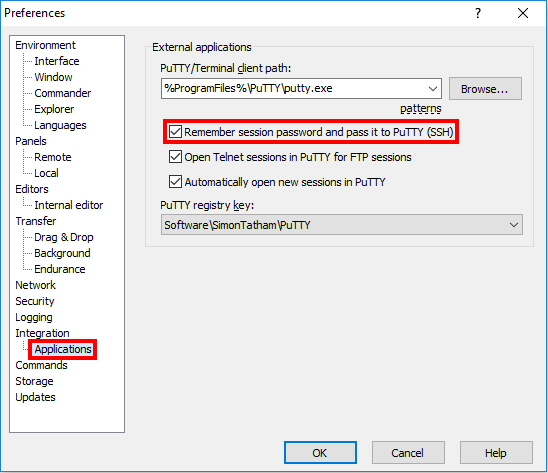
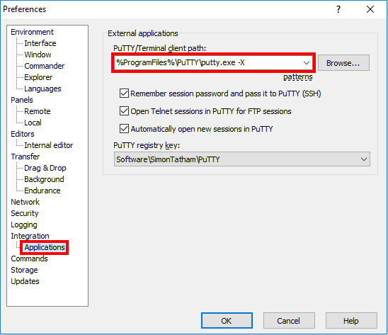
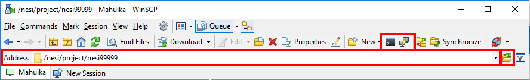
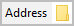
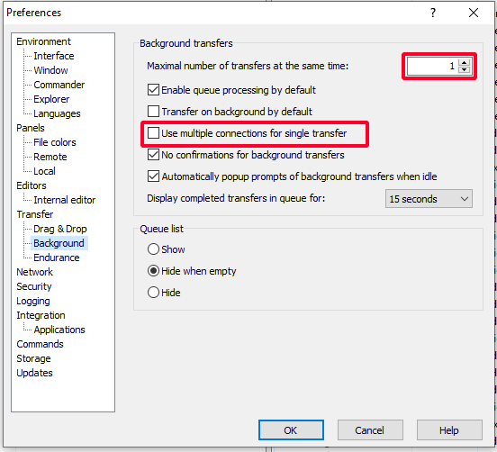

WinSCP/PuTTY Setup (Windows)
Warning
This page has been automatically migrated and may contain formatting errors.
Prerequisite
- Have an active account and project.
- Set up your NeSI account password.
- Set up Second Factor Authentication.
- Be using the Windows operating system.
WinSCP is an SCP client for windows implementing the SSH protocol from PuTTY.
WinSCP can be downloaded here.
Upon startup:

1. Add a New Site and set:
- Enter in Host Name: login.mahuika.nesi.org.nz or login.maui.nesi.org.nz
- Enter your NeSI account username into User name: (Password optional)
Prerequisite
For "file protocol" (the topmost drop-down menu), either SCP or SFTP is acceptable. If you are trying to move many small files or have a slow or flaky Internet connection, you may find that SFTP performs better than SCP. Feel free to try both and see which works best for you.

5. Open Advanced Settings.

6. Navigate to Connection > Tunnel and set:
- Enable "Connect through SSH tunnel".
- Under "Host name:" enter lander.nesi.org.nz
- Under "User name:" enter your username.
- Optionally, enter your password in the "Password:" box.
10. OK > Save
Setup for PuTTY Terminal¶
The default WinSCP terminal lacks much functionality. We highly recommend you use the PuTTY terminal instead.
1. Download PuTTY here and install.
2.In WinSCP open 'Tools > Preferences'

3. Under Integration > Applications enable Remember session password and pass it to PuTTY

Setup for Xming (Optional)¶
Xming is an X server for Windows allowing graphical interface with the HPC and can be downloaded here.
1. Install Xming following the prompts. (Make sure 'Normal PuTTY Link SSH Client' is selected).
2. Under Integration > Applications and add -X after PuTTY/Terminal client path.

3. Restart your session.
Prerequisite
In order for X11 forwarding to work you must have an Xming server running before connecting to the HPC.
Usage¶
Files can be dragged, dropped and modified in the WinSCP GUI just like in any windows file system.

 Will
open a PuTTY terminal. Assuming you followed the steps setting up
PuTTY, this should automatically enter in your details.
Will
open a PuTTY terminal. Assuming you followed the steps setting up
PuTTY, this should automatically enter in your details.
 Will
open the default WinSCP terminal. While the functionality is
identical to any other terminal the interface is slightly abstracted,
with a separate window for input and command history drop-down.
Will
open the default WinSCP terminal. While the functionality is
identical to any other terminal the interface is slightly abstracted,
with a separate window for input and command history drop-down.
 Type here to change directory. The GUI doesn't follow your current terminal directory like MobaXterm so must be changed manually. (Recommend making this larger as the default is very hard to type in).
Bookmark current directory.
Troubleshooting¶
Repeated Authentication Prompts¶
By default, WinSCP will create multiple tunnels for file transfers. Occasionally this can lead to an excessive number of prompts. Limiting number of tunnels will reduce the number of times you are prompted.
1. Open settings

2. Under 'Transfer' -> 'Background', set the 'Maximal number of transfers at the same time' to '1' and untick 'Use multiple connections for a single transfer'.

Prerequisite
As WinSCP uses multiple tunnels for file transfer you will be required to authenticate again on your first file operation of the session. The second prompt for your second-factor token can be skipped, just as with login authentication.
!!! prerequisite What Next? - Moving files to/from a cluster. - Setting up an X-Server (optional).
Created: July 21, 2021